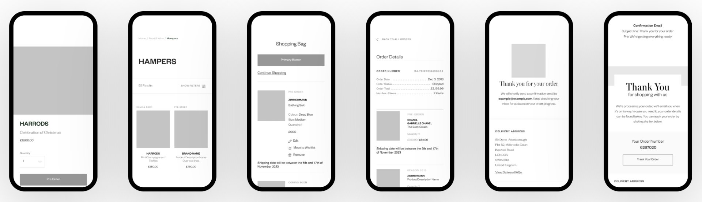
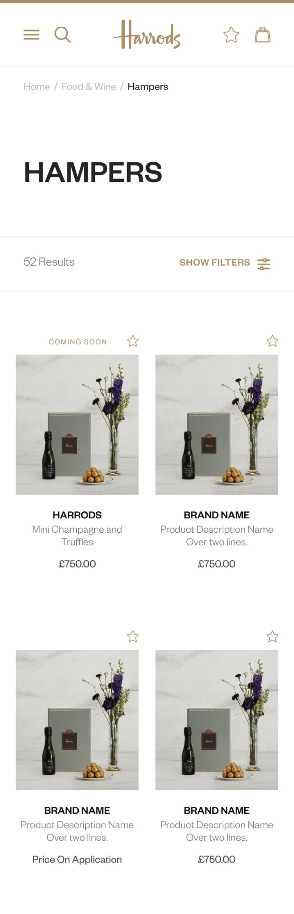
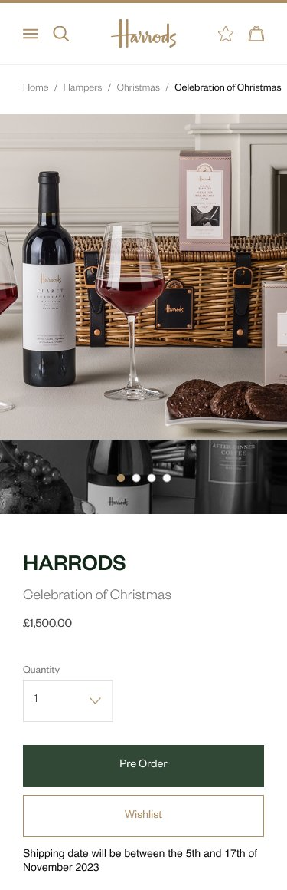
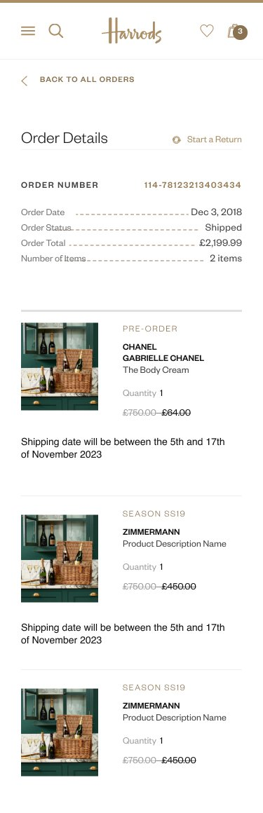
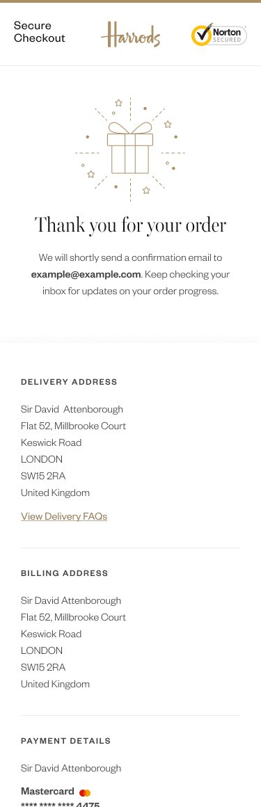
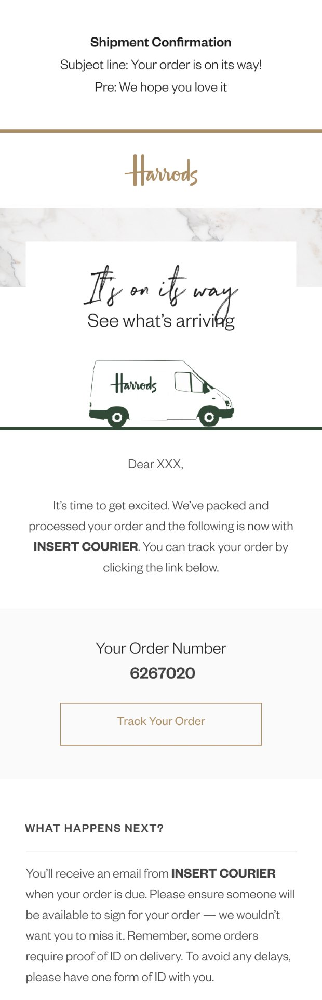

Harrods Pre-Order Feature Design
Effortless, luxury-grade way to reserve high-demand products. Designed a luxury-grade pre-order experience that allows customers to reserve products before official release — improving the shopping experience while enabling Harrods to forecast demand more accurately and manage inventory with confidence.

The Challenge
"I missed out on the limited-edition bag I wanted because I didn't know when it would be available. By the time I heard about it, everything was sold out. There should be a way to reserve items in advance."
— Emma Thompson, Luxury ShopperHarrods did not offer a pre-order capability across its website or mobile app. Through early analysis, I identified this gap as a key driver of customer frustration and missed revenue, particularly for high-demand and limited-edition products.
The Problem I Identified
- Customers frequently missed high-demand items due to lack of early access
- No digital mechanism existed to capture demand before launch
- Customers were forced to repeatedly check availability, increasing frustration
- Missed conversion opportunities reduced both revenue and loyalty
Solution Approach I Developed
I designed and validated a luxury-grade pre-order experience that allows customers to reserve products before official release — improving the shopping experience while enabling Harrods to forecast demand more accurately and manage inventory with confidence.
Design Process
Research: Understanding Luxury Shopping Behaviour
What I Needed to Discover
I needed to understand how luxury customers perceive early access and exclusivity, convenience without compromising prestige, and trust and reassurance when purchasing unreleased products. I also evaluated whether pre-ordering could deliver business value without diluting the premium experience Harrods customers expect.
"Luxury shopping should be effortless and exclusive. When I want something, I expect access before everyone else."
— Victoria Sterling, VIP CustomerResearch Approach
- Customer Surveys & Interviews: Conducted qualitative research with Harrods customers across segments, revealing strong demand for guaranteed access and transparency.
- User Journey Analysis: Mapped limited-edition purchase journeys to identify friction points, anxiety moments, and drop-off risks using analytics data.
- Competitive Analysis: Analysed how other luxury retailers handle pre-ordering, identifying gaps and differentiation opportunities.
- Business Impact Assessment: Evaluated how pre-ordering could improve inventory planning, revenue forecasting, and customer retention.
- Analytics Review: Examined existing user behaviour patterns and conversion metrics to inform iterative design decisions.
Research Synthesis


Key Findings
Insights: Defining the Luxury Experience Challenge
What I Needed to Solve
I synthesised research into a core challenge centred on Security (confidence in reservation), Simplicity (effortless flow), and Exclusivity (service-oriented, not transactional). The solution needed to feel like a luxury service, not a standard ecommerce feature.
Design Questions
- How might we help customers secure high-demand items without eroding Harrods' premium experience?
- How might we reduce missed purchase opportunities for limited products?
- How might pre-ordering feel seamless and luxurious rather than mechanical?
- How might demand data improve inventory planning and customer satisfaction?
Problem Statement
High-intent luxury customers lacked early access and transparency for limited-edition products, resulting in missed purchases, frustration, and lost loyalty. A pre-order experience needed to restore confidence while reinforcing Harrods' exclusivity. I anchored design decisions around a high-value luxury shopper persona to maintain focus on premium expectations.

Ideation: From Problems to Elegant Solutions
How I Explored Solutions
I generated multiple concepts using structured wireframing and prototyping techniques in Figma, then evaluated them against user impact, technical feasibility, alignment with luxury experience standards, and accessibility requirements (WCAG 2.2 AA compliance). Working collaboratively in an agile sprint cycle, my goal was to reduce uncertainty and effort without adding complexity.
Concept Exploration
Using Crazy 8s and rapid sketching, I explored different reservation models, then applied a value-vs-effort matrix to prioritise concepts that enhanced exclusivity and integrated seamlessly into existing shopping flows.
User Flow Design


Core Features I Prioritised
Information Architecture
I integrated pre-ordering into Harrods' existing structure to ensure intuitive navigation and minimal cognitive load.

Solution: Design & Validation
How My Solution Came to Life
Working in an agile, multidisciplinary team environment, I evolved concepts through iterative design and testing cycles. I delivered a mobile-first, accessible experience that balanced luxury aesthetics with clarity and usability. The design process involved close collaboration with developers to ensure technical feasibility and proper implementation using HTML, CSS, and JavaScript.
Every decision aligned with Harrods' brand standards, WCAG 2.2 AA accessibility guidelines, and customer expectations validated through user research.
Design Evolution
Using Figma and Sketch as my primary prototyping tools, I started with low-fidelity wireframes to validate core user flows and interaction patterns, information hierarchy and visual structure, terminology clarity through user testing, and accessibility considerations including screen reader compatibility and keyboard navigation.

High-Fidelity Mobile Experience
The final designs delivered a complete end-to-end mobile experience — from discovery to confirmation — with clear product availability messaging, transparent pre-order details, reassuring confirmation and shipment updates, and fully WCAG 2.2 AA accessible interactive elements.

Product Listing

Product Detail & Pre-Order

Order Details

Order Confirmation

Shipment Email
What I Validated
Improvements I Made
- Simplified product detail layouts based on user testing insights
- Strengthened CTA hierarchy using interaction design principles
- Enhanced accessibility features including improved colour contrast and focus indicators
- Refined notification timing and preferences informed by user behaviour data
- Clarified payment terminology through A/B testing proposals
- Optimised mobile interactions in collaboration with the development team
Before & After Metrics
Before
After
Client Testimonial
"Andrew brought a level of sophistication to our pre-order feature that truly reflects the Harrods brand. He balanced luxury aesthetics with functional clarity, working closely with our stakeholders to navigate strict brand guidelines. The result exceeded our expectations — customers love the seamless experience, and our team has seen a dramatic reduction in manual processing. His attention to detail and collaborative approach made all the difference."
Results: Impact & Next Steps
What I Achieved
I designed a luxury-grade pre-order experience that reduced customer frustration, unlocked demand forecasting opportunities, and increased confidence and conversion potential. This project demonstrated how UX strategy can enhance luxury retail while delivering measurable business value.
Key Learnings
Next Steps I Recommended
Final Reflection
Through the Harrods pre-order feature, I demonstrated how strategic UX design can elevate luxury retail experiences while delivering tangible business outcomes. By focusing on customer empowerment rather than transaction speed, I designed a service that reinforced Harrods' commitment to exclusivity and care.
"This is exactly what luxury shopping should feel like — effortless and exclusive."
This project reinforced my belief that great product design lives at the intersection of customer desire and business strategy.